- Utilizing the update step of the Bayes Filter to perform localization on my robot car.
Objective
Lab 11 Sections
- Introduction
- Simulation
- Robot Implementation
- Real-world Localization
Introduction
For this lab, we have the same simulation with the Bayes Filter so that our real car can perform grid localization using that Bayes Filter.
The simulation's world was discritized in a 12 by 9 by 18 grid (x,y,θ). Each x and y cell were 0.3048 meters and each θ was 20 degrees.
RED: Odometry Model based belief of where the robot is
BLUE: Probabilistic (Bayesian) Belief of where the robot is
GREEN: Ground Truth of where robot is
SQUARES: Distribution of Belief of where the robot is (only displayed in simulation)
BLUE: Probabilistic (Bayesian) Belief of where the robot is
GREEN: Ground Truth of where robot is
SQUARES: Distribution of Belief of where the robot is (only displayed in simulation)
Simulation
To make sure that the Bayes Filter was working, I ran lab11_sim.ipynb.
The resulting simulated localization while moving through our simulated world is the following:
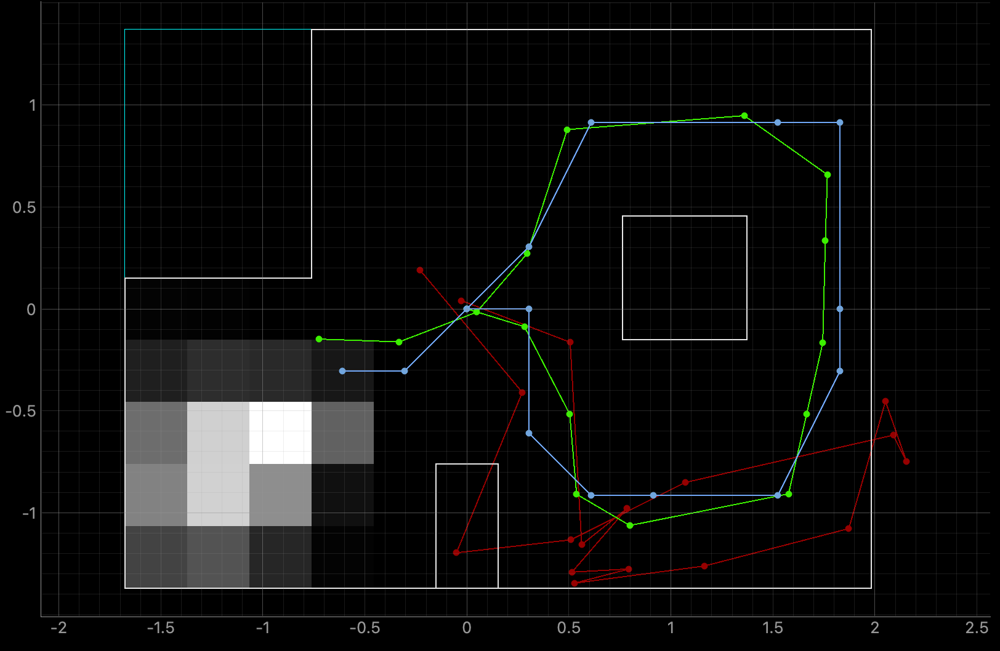
Robot Implementation
As far as the Artemis' code is concerned, I kept all the same code from Lab9. However, I found one typo that could explain the error present in that lab.
Instead of taking the average of ten ToF measuremetns with:average = (ToFs0[0] + ToFs0[1] + ToFs0[2] + ToFs0[3] + ToFs0[4] + ToFs0[5] + ToFs0[6] + ToFs0[7] + ToFs0[8] + ToFs0[9])/10;,
I had ToFs[9] in the place of ToFs0[9]0 which always returned 0 and added extra noise.
Next up, was to implenent the different functions for the lab11_real.ipynb notebook. As mentioend earlier, I was determined to keep the code from Lab9 because I really liked how it worked. An important part is the DMP-based PI controlled rotation that gives 0 tolerance for error in terms of the target angle (this will be important later).
To implement perform_observation_loop(), I first added my mapping_handler() notification handler function inside the RealRobot class.
defmapping_handler(self, uuid, byteArray) : string = self.ble.bytearray_to_string(byteArray).strip() A,D = string.split(",") angle= float(A[2:]) distance = float(D[2:]) self.angles.append(angle) self.distances.append(distance/1000)# to convert to m from mm
async defperform_observation_loop(self, rot_vel=120) :self.ble.start_notify (self.ble.uuid['RX_STRING'],self.mapping_handler ) print("Started notifying MAPPING data for service: RX_STRING") self.ble.send_command(CMD.OBTAIN_MAP_READINGS, "") while(len(self.angles) < 18):await asyncio.sleep(3)self.ble.stop_notify (self.ble.uuid['RX_STRING']) sensor_ranges = np.array(self.distances).reshape(-1, 1) sensor_bearings = np.array(self.angles).reshape(-1, 1) self.angles.clear() self.distances.clear() returnsensor_ranges, sensor_bearings
async and awaiy keywords found above. I also had to add them in localization.py here:
async def get_observation_data(self, rot_vel=120): self.obs_range_data, self.obs_bearing_data =await self.robot.perform_observation_loop( rot_vel)
await loc.get_observation_data()
Real-world Localization
After the code was set up, I placed my robot in the for marked poses in the world:
- (-3 ft ,-2 ft ,0 deg)
- (0 ft,3 ft, 0 deg)
- (5 ft,-3 ft, 0 deg)
- (5 ft,3 ft, 0 deg)
To print the ground truth of the point I added the following in that jupyter cell:
gt_point = (5, 3) gt_x = gt_point[0]*0.3048 gt_y = gt_point[1]*0.3048 cmdr.plot_gt(gt_x, gt_y)
gt_point variable depending on where I placed the robot.
Originally, I had aligned my IMU's axes with the axes of the world like so:
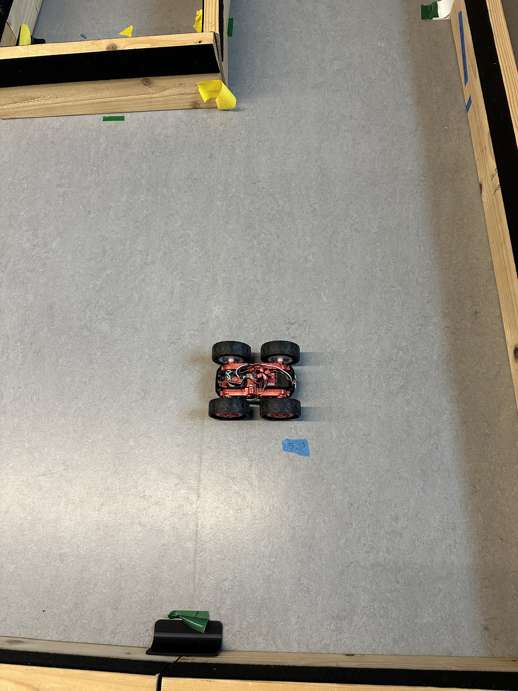
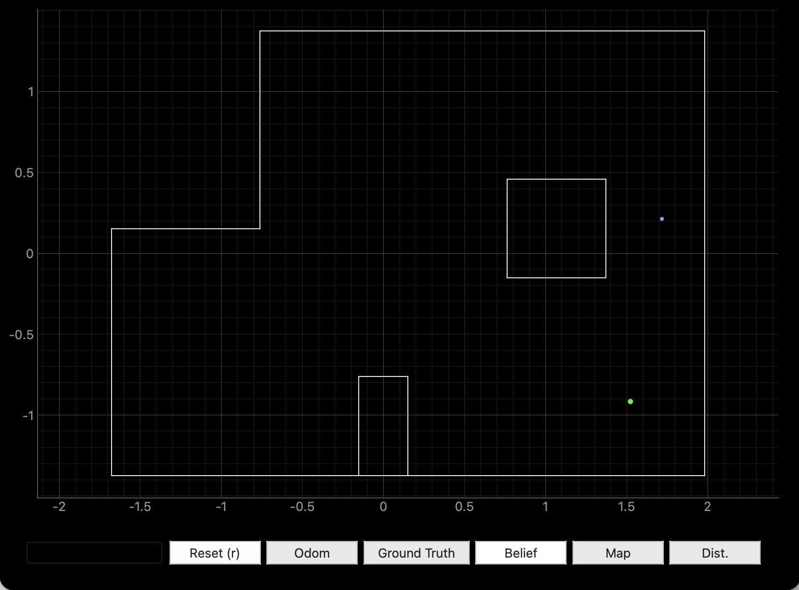
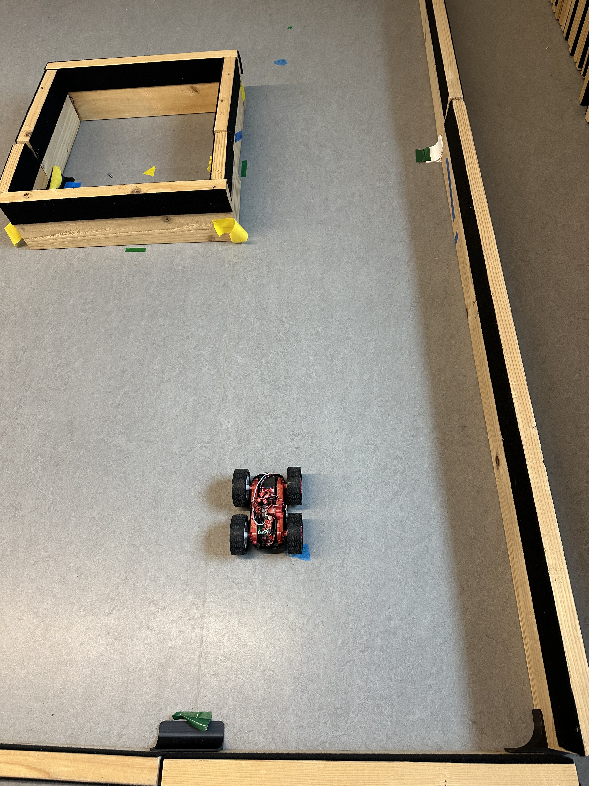
The results of the localization are depicted below with photos and videos:
(-3 ft ,-2 ft ,0 deg)
Ground Truth
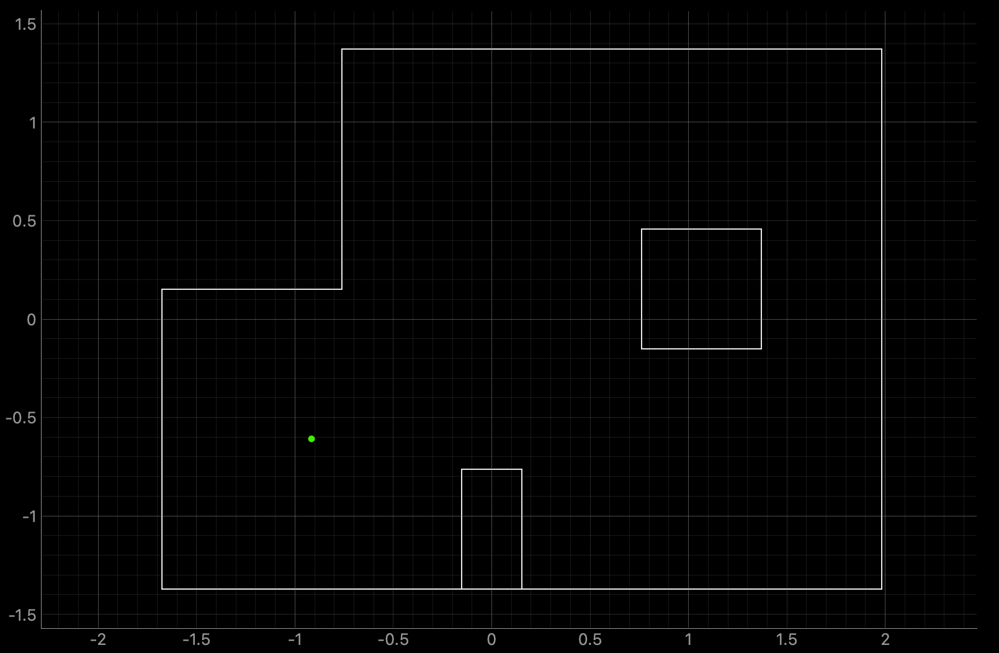
Belief
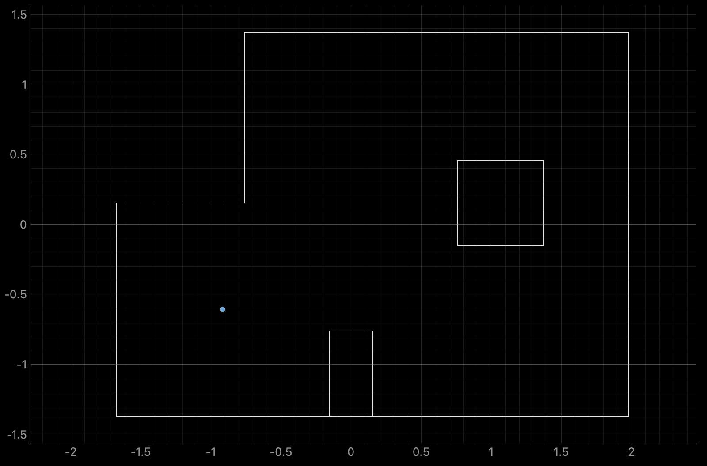
(0 ft,3 ft, 0 deg)
Ground Truth
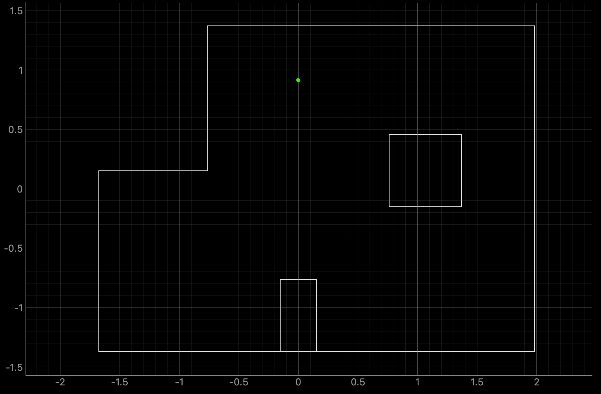
Belief

(5 ft,-3 ft, 0 deg)
Ground Truth
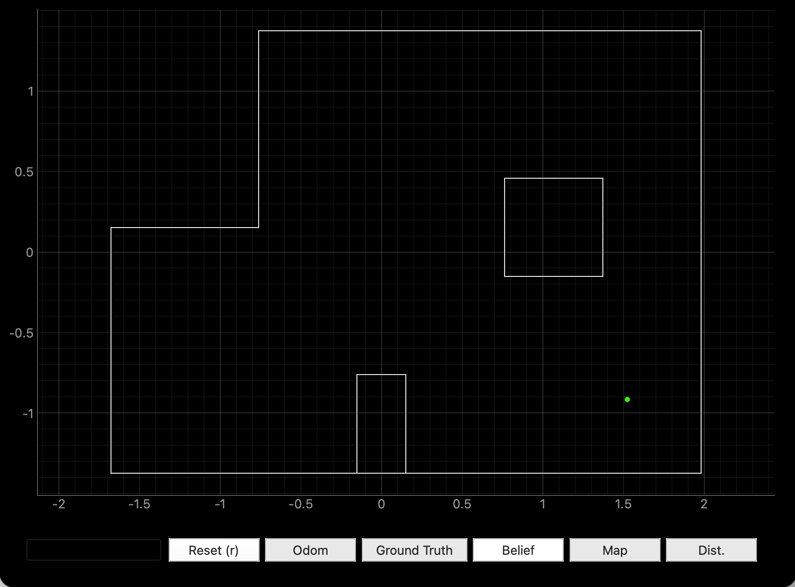
Belief
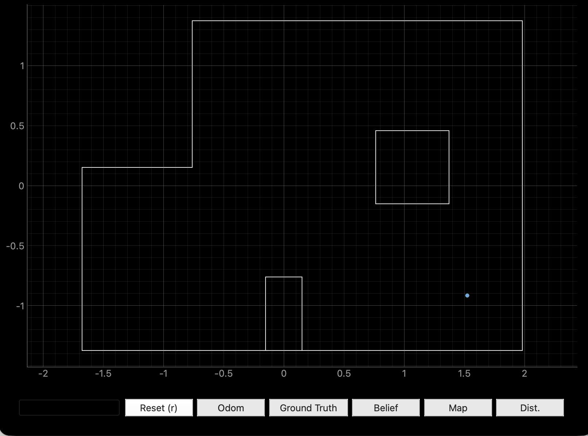
(5 ft,3 ft, 0 deg)
Ground Truth
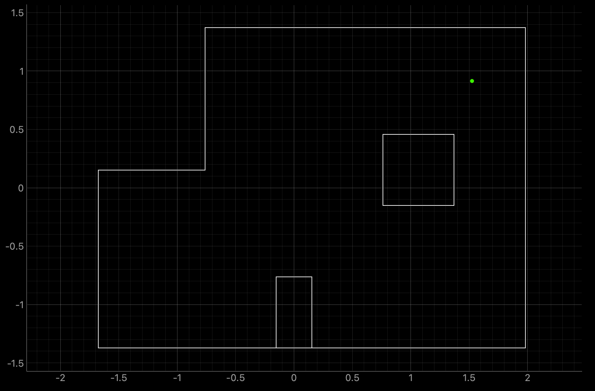
Belief
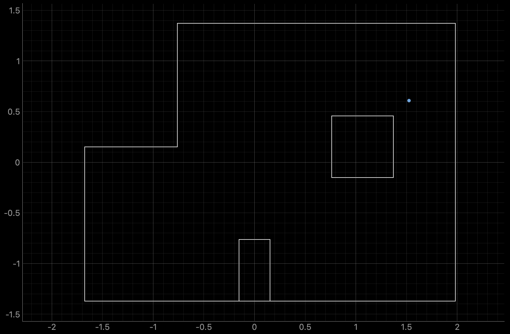
Comparison in same screenshot
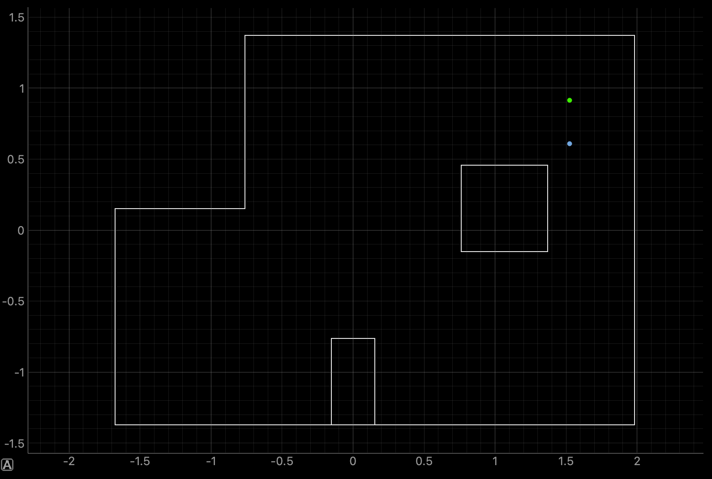
One explanation for this inaccuracy is that the real world's "box" obstacle had been moved upwards a bit, and therefore my robot detected smaller distances towards it and "thought" it was closer to it.
I didn't want to move the obstacle in case I was wrong, but if I am right, the box should be aligned with the following green lines:
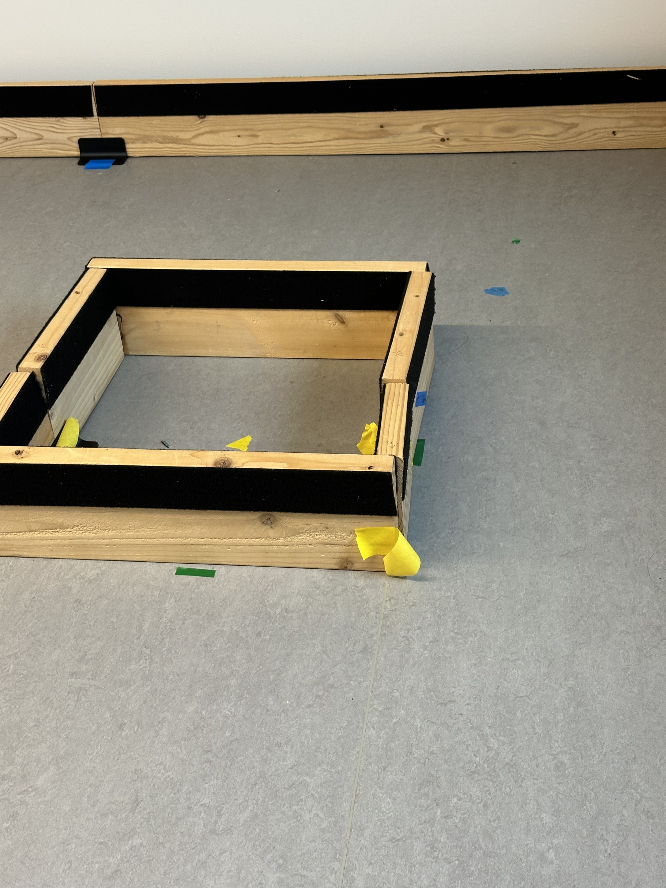
Localization accuracy and PI comment
As I mentioned above, I was a bit scared from the fact that my localization was so spot on, as Lalo Esparza's, was a bit off from the ground truth. However, after a brief discussion with him, I asked him whether he had any room for error in the target angle in his roration controller, and he said he did.After I told him that I had set up my controller so that the robot wouldn't stop until it was at the exact target angle (thanks to the DMP's accuracy) and that I left zero room for error (at the expense of time), he did the same, and also got his belief to land exactly above the ground truth, which relieved me. The professor was right that we should be more social.
Discussion
Lab 11 successfully implemented Bayes Filter on the actual robot to perform Grid Localization in a real-world arena.
Collaboration
I referred to Lucca Correia's website for structuring this lab report.Had a conversation with Lalo Esparza (had to look through the student websites to find his name 🤐)